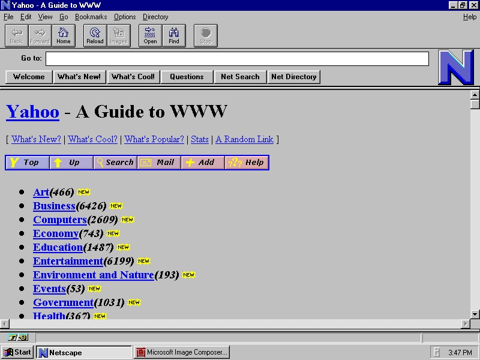
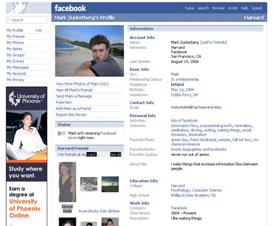
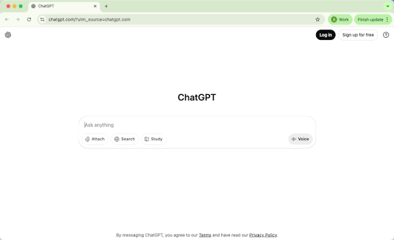
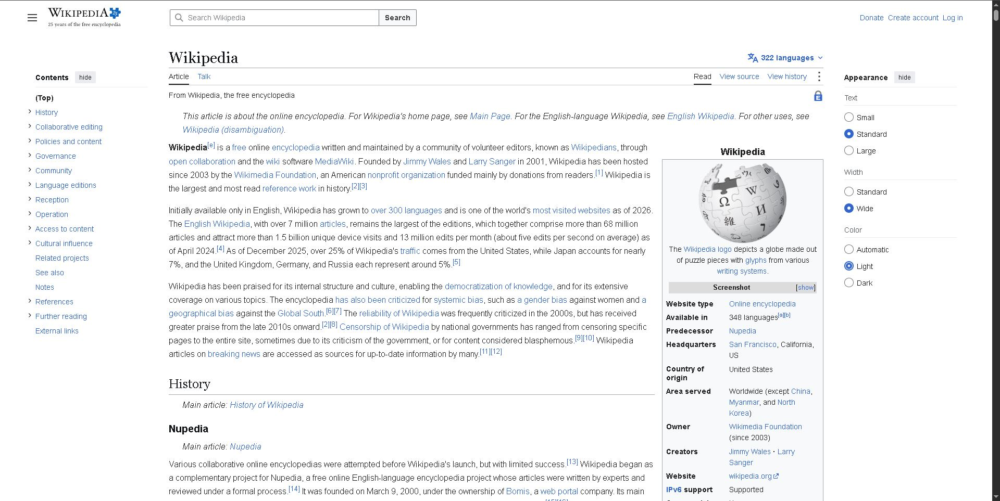
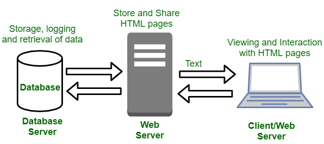
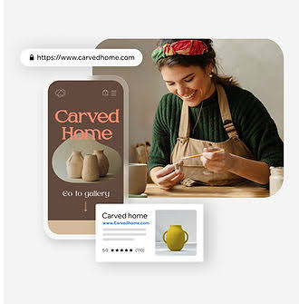
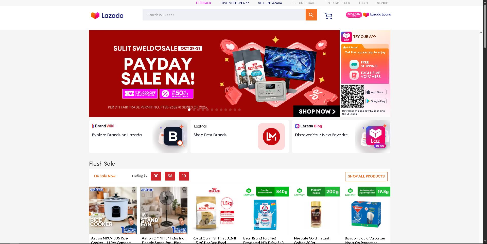
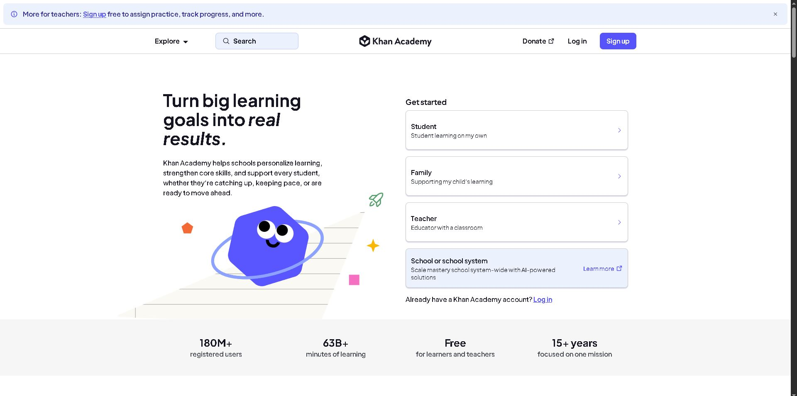
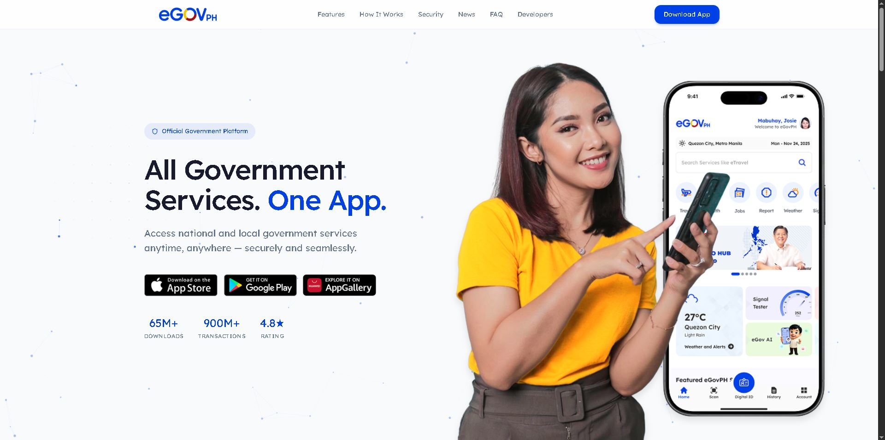
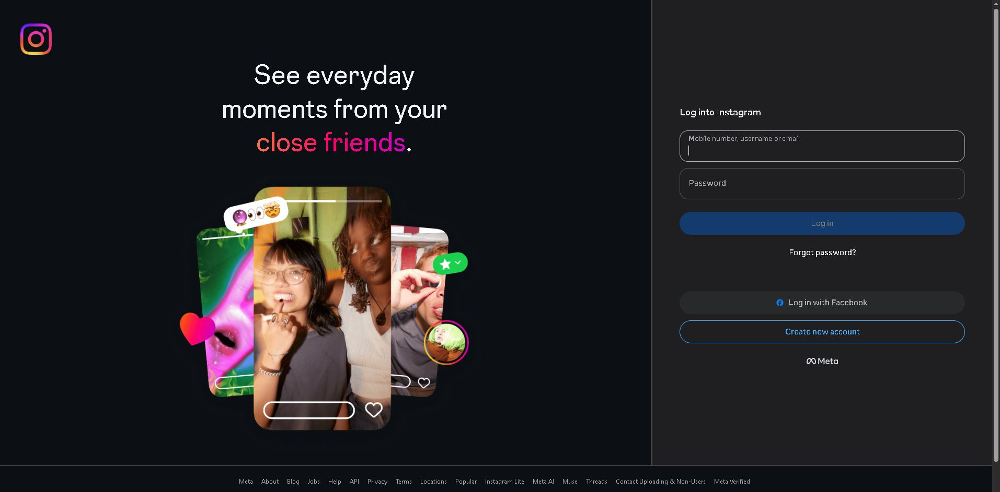

WORLD WIDE WEB
The World Wide Web (WWW) is a collection of interconnected webpages and websites that people access through the Internet using web browsers.
- Tim Berners-Lee
- Computer Scientist & Professor
WEB 1.0 (Static Web)
First generation of the web where users could only read information.
"Read-Only"
"Information Economy"
Characteristics:
- Static webpages
- Information only
- No comments
- No interaction

WEB 2.0 (Dynamic Web)
Allows users not only to read information but also to create, share, and interact with content.
"Read & Write"
"Platform Economy"
Characteristics:
- Social media
- Online collaboration
- User-generated content
- Likes, comments, shares
- Real-time communication

WEB 3.0 (Semantic Web)
Generation of the web that focuses on intelligence, personalization, decentralization, and user ownership of data.
"Read-Write-Own"
"Ownership Economy"
Characteristics:
- Artificial Intelligence
- Personalized recommendations
- Smart search
- Machine Learning

DIFFERENT TYPES OF WEBSITES
Websites serve various purposes and audiences. Below are the common types of websites you encounter:
1. Static Website
A website with fixed content that remains the same for all visitors. It only displays information and usually requires a web developer to make updates.

2. Dynamic Website
A website whose content changes based on user interaction, time, or database information. It is interactive and updated regularly.

3. Personal Website
A website created by an individual to share personal information, hobbies, achievements, portfolios, or blogs.
4. Business Website
A website designed to promote a company, its products, services, contact information, and brand identity.

5. E-Commerce Website
A website that allows users to buy and sell products or services online through secure payment systems.

6. Educational Website
A website developed for teaching, learning, training, or academic purposes. It provides educational resources, online classes, and assessments.

7. Government Website
A website managed by a government agency that provides public information, announcements, and online government services.

8. Entertainment Website
A website created to entertain users through videos, music, games, movies, or streaming services.
9. Social Networking Website
A website where users create profiles, connect with others, communicate, share photos and videos, and build online communities.
